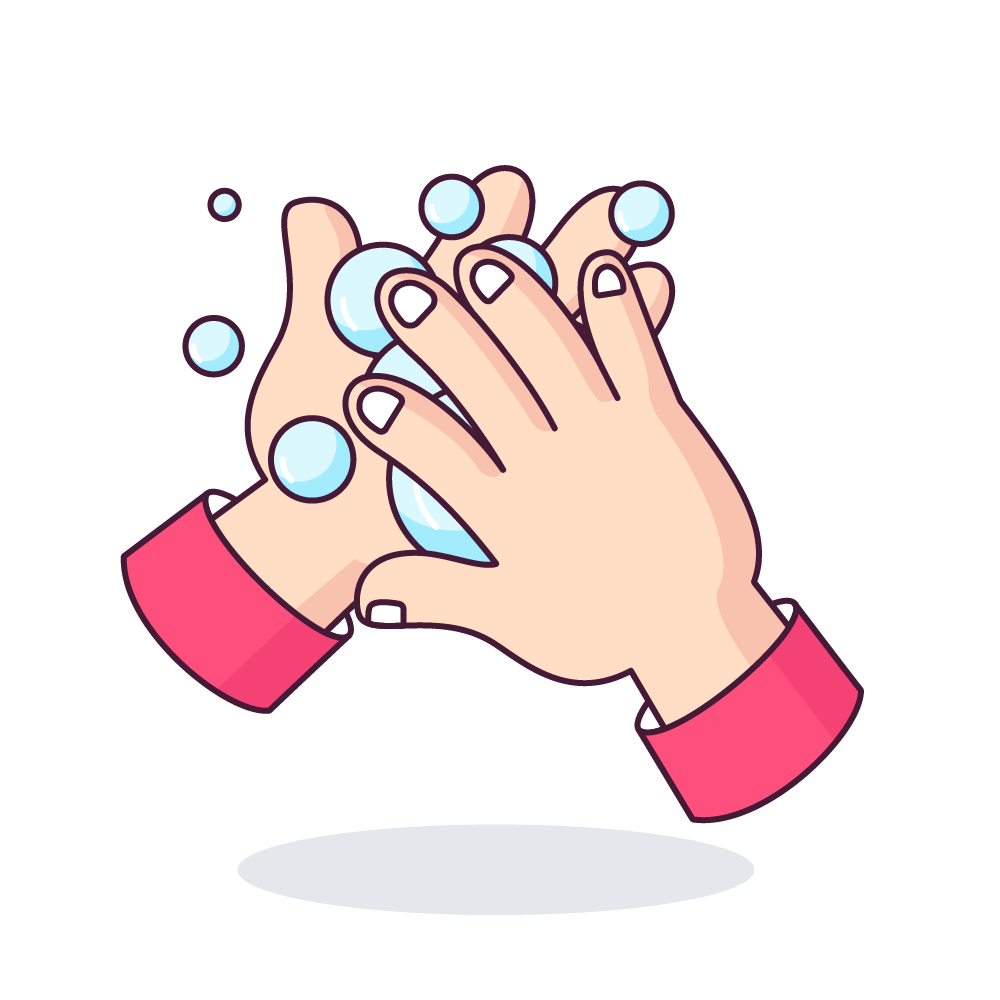
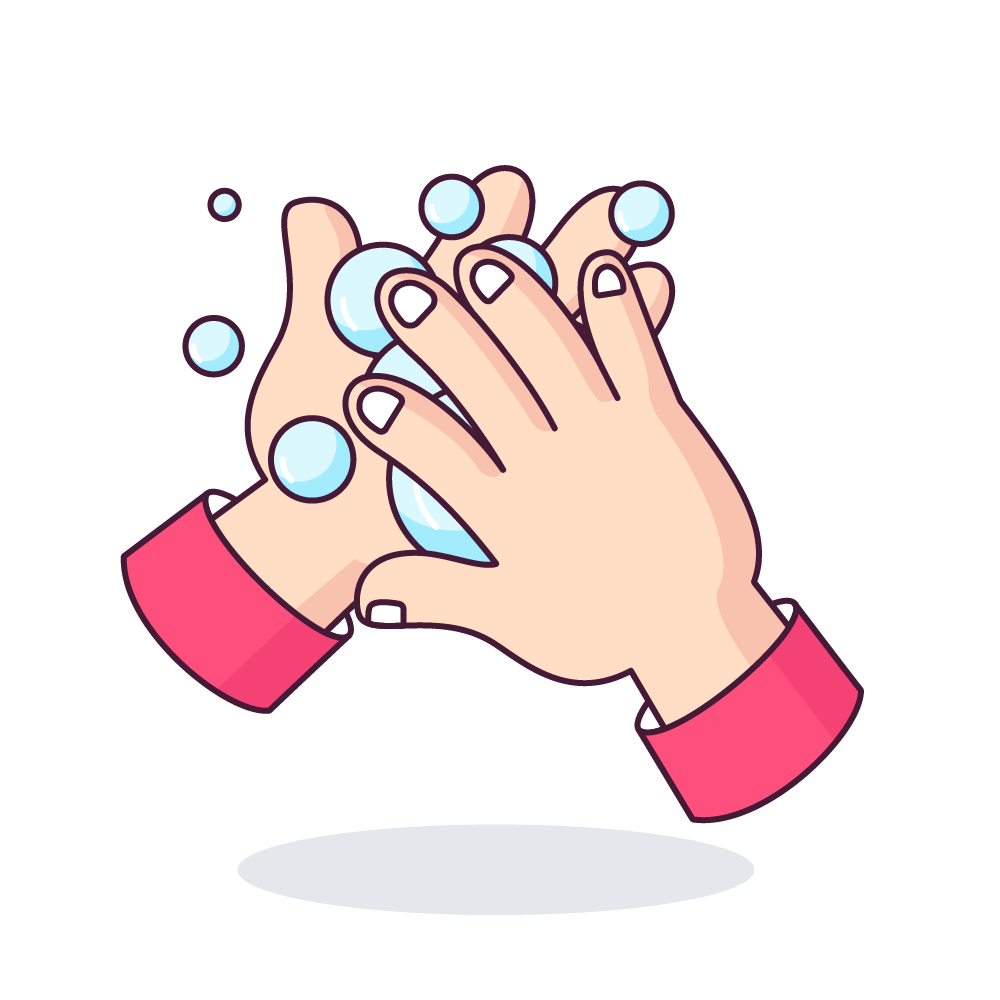
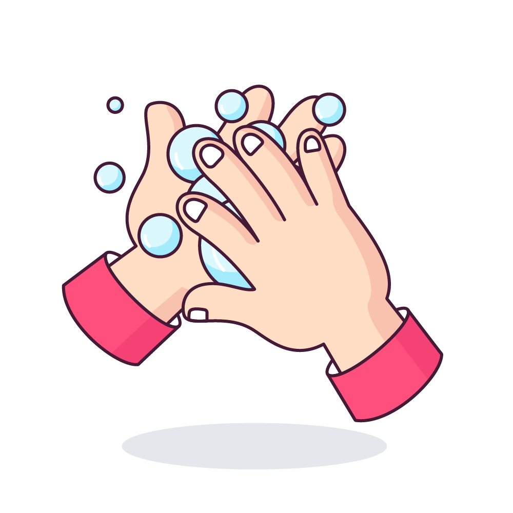
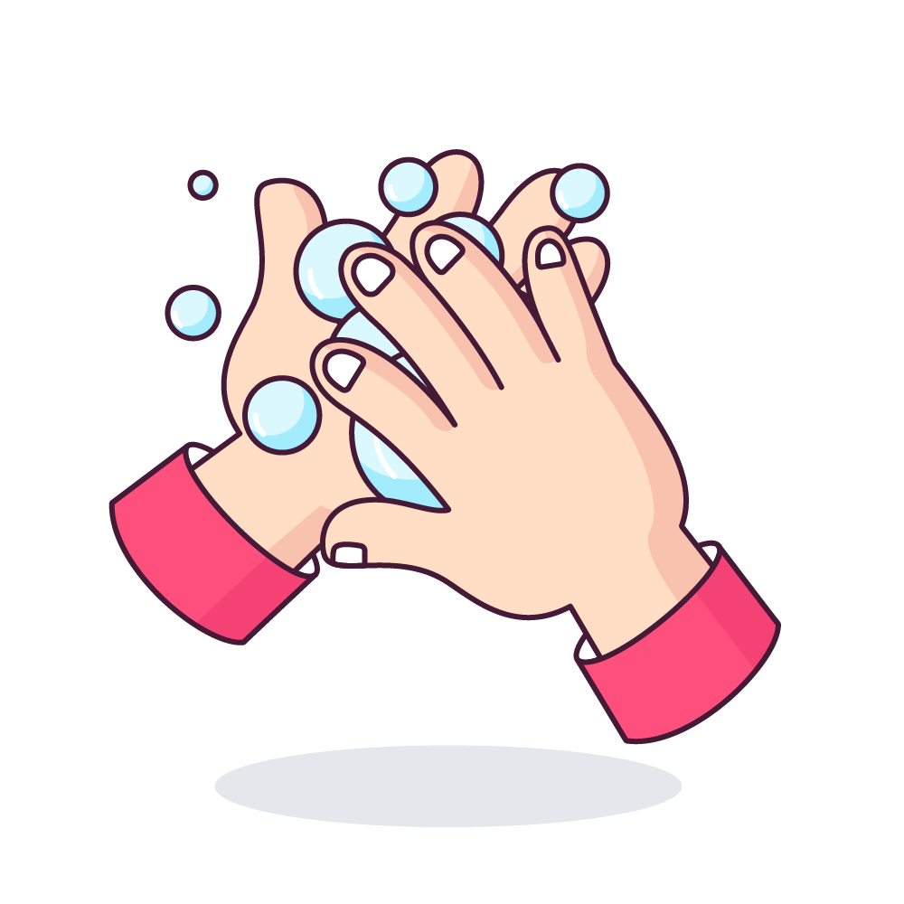

Beş BM örgütü tarafından hazırlanan rapora göre, dünyada 821 milyon kişi açlık çekiyor.

BM, savaşların yanı sıra ekonomik krizlerin ve iklim değişikliklerinin gıda alanında krize yol açtığını vurguladı.

Zengin yeraltı kaynakları ve tarıma elverişli toprakları olmasına rağmen iç savaş sebebiyle büyük gıda krizi yaşayan Güney Sudan'da, 4,9 milyon kişi acil yardım bekliyor.

UNICEF'in 2017 yılında yayınladığı raporunun, suyla ilgili tüm dünyanın endişelerini ortaya koyması bizi haklı gösterebilir. Raporda, 2015 yılında Dünya nüfusunun yüzde 11'inin (844 milyon kişi) suya erişimi olmadığı belirtiliyor.
Afrika'daki su kıtlığı, kıtadaki hayati faaliyetleri de doğal olarak etkiliyor.
Afrika’da yaklaşık bir milyar insan sağlıklı ve temiz suya erişemiyor.

Sıtma, çocuk felci, uyku hastalığı (trypanosomiase), isala bağlı hastalıklar, kolera, verem gibi hastalıklar birkaç Afrika topluluğunda ciddi boyutlarda zararlara neden olmuştur.
Afrika’da ölen her yüz çocuktan onunun ölüm sebebi olan hastalık sıtmadır.

AIDS’le mücadele, BM’de 2000 yılında 189 ülkenin altına imza koyduğu milenyum hedefleri arasında yer alıyor. Her yıl AIDS’den ölen 3 milyon kişiden 2,3’ü Afrika’da yaşıyor.

Dünyada her gün ortalama 25.000 kişi açlıktan ölüyor.